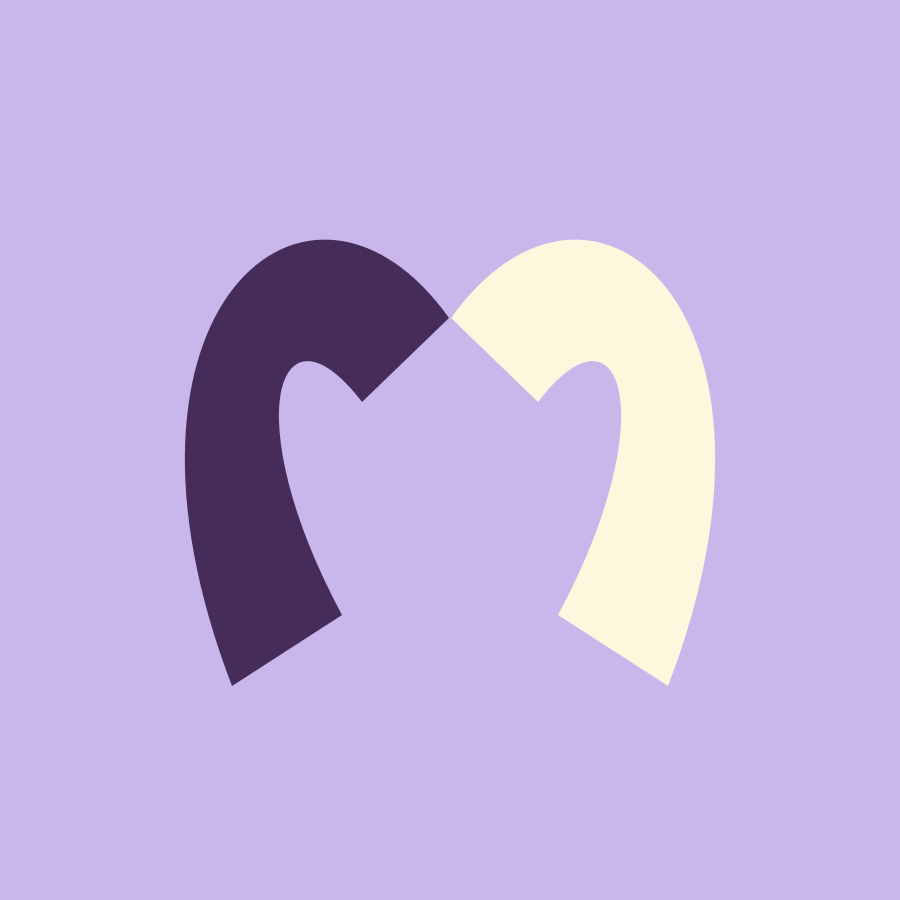
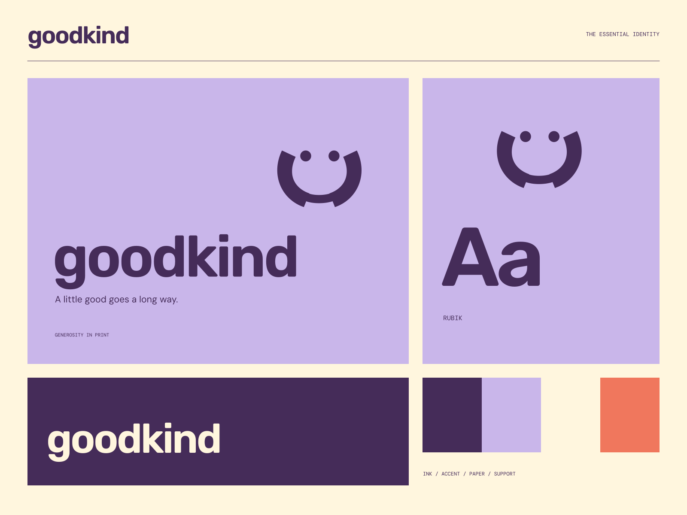

01
Start close to home
Small, useful actions that begin with the people around you.
GOOD PEOPLE / SHARED POSSIBILITY
A little good goes a long way. Something good to be part of.

A coherent little world
Something good to be part of. A little good goes a long way.
01
Small, useful actions that begin with the people around you.
02
A community that gets better with every different perspective.
03
Share an idea, a skill, a little time, or a helping hand.

The point of view
Embracing shapes, riso-style overprinting, neighborhood notices, and welcoming rounded lettering. Warmth comes from the sense that many people belong here.